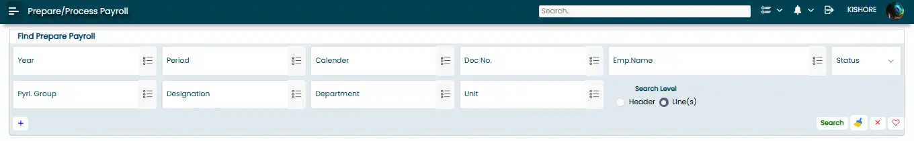
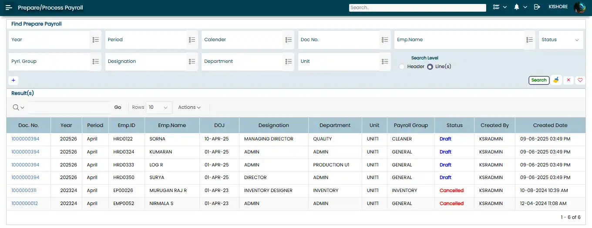
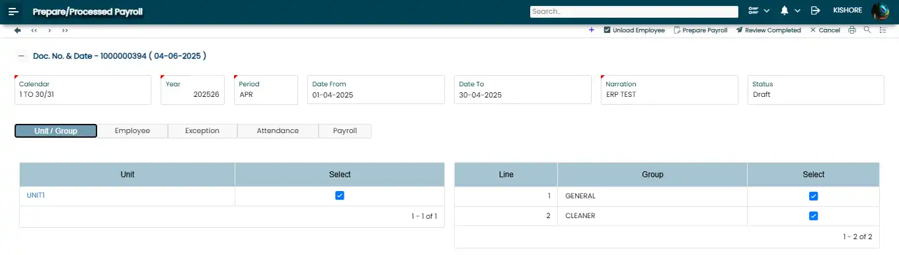
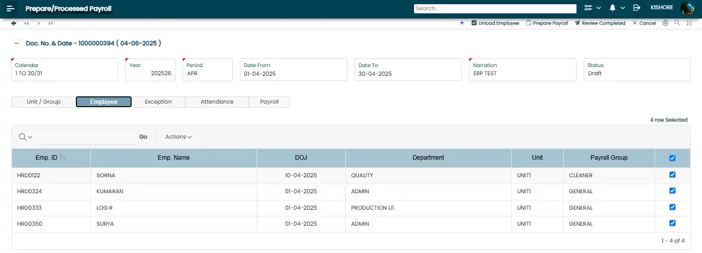
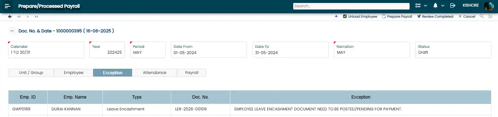
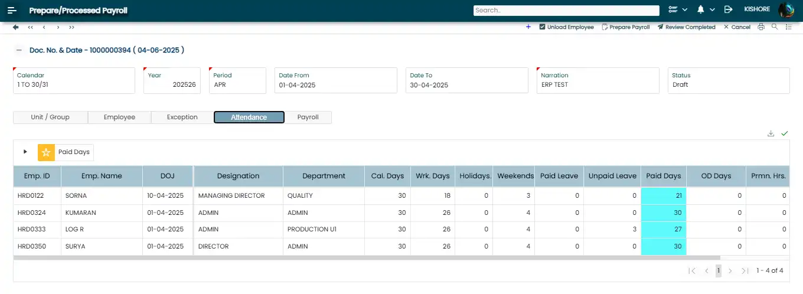
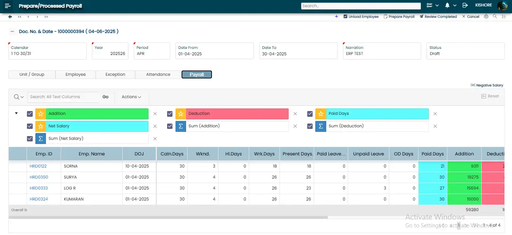
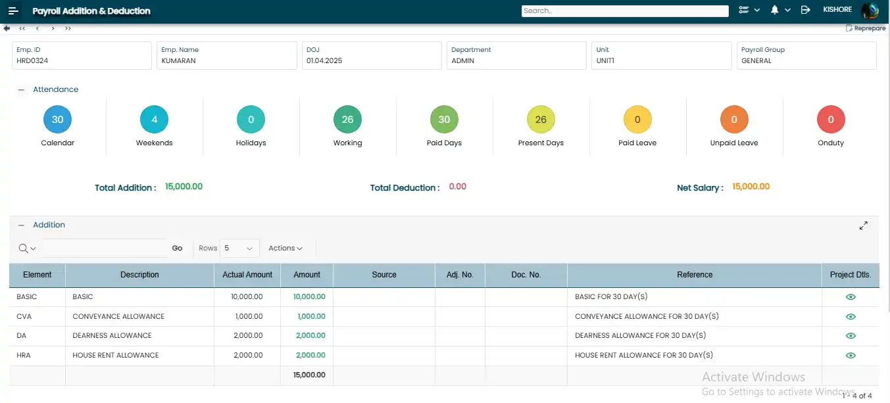

<div data-category="Payroll" data-title="Prepare/Process Payroll" data-updated="December 01, 2025" data-contributors="RoadmapIT" data-breadcrumb="Home,Payroll,Prepare/Process Payroll">
  <div class="page-content">
    <p>This screen is used to input employee hours, calculate their gross pay, deduct taxes and other withholdings, and generates the final paychecks for each employee, essentially completing the entire payroll cycle for a specific pay period.</p>
    <h5>Navigation path:</h5>
    <p class="fs-6">Payroll \ Transaction \ Payroll \ Prepare/Process Payroll</p>
    <!-- Prepare/Process Payroll -->
    <h2>Prepare/Process Payroll</h2>
    
    <ul style="list-style-type: none; align-content: center">
      <li class="mouse-icon">Search screen displays the list of Payroll with the relevant details.</li>
      <li class="mouse-icon">Click on search to filter all the records.</li>
    </ul>
    
    <ul style="list-style-type: none; align-content: center">
      <li class="mouse-icon">User can filter the respective documents by entering the search parameters at the header.</li>
      <li class="mouse-icon">Using search, system displays the results relevant to the search parameters entered.</li>
      <li class="mouse-icon">On-click, the corresponding transaction record will be displayed.</li>
      <li class="mouse-icon">
        Using
        
        icon, entered search parameters can be cleared.
      </li>
      <li class="mouse-icon">
        To close the screen, use
        <i class="bi bi-x fs-4 mx-2 text-danger"></i>
        icon.
      </li>
      <li class="mouse-icon">
        By clicking the
        <i class="bi bi-plus fs-4 mx-2 text-primary"></i>
        Add button user can create a new document.
      </li>
    </ul>
    <!-- Unit Group -->
    <h2>Unit Group:</h2>
    <ul style="list-style-type: none; align-content: center">
      <li class="mouse-icon">Select the calendar.</li>
      <li class="mouse-icon">Select the year, period.</li>
      <li class="mouse-icon">Enter Narration.</li>
      <li class="mouse-icon">
        Click
        <i class="bi bi-check-lg fs-5 mx-1 text-success"></i>
        to save.
      </li>
    </ul>
    
    <ul style="list-style-type: none; align-content: center">
      <li class="mouse-icon">Check Load Unit Group checkbox.</li>
      <li class="mouse-icon">Necessary Units and Group can be selected to run payroll.</li>
    </ul>
    <!-- Employee -->
    <h2>Employee:</h2>
    
    <ul style="list-style-type: none; align-content: center">
      <li class="mouse-icon">Check Load Employee checkbox.</li>
      <li class="mouse-icon">Necessary Employees can be selected to run payroll.</li>
    </ul>
    <!-- Exception -->
    <h2>Exception:</h2>
    
    <ul style="list-style-type: none; align-content: center">
      <li class="mouse-icon">Check the prepare payroll checkbox.</li>
    </ul>
    <!-- Attendance -->
    <h2>Attendance</h2>
    
    <!-- Payroll -->
    <h2>Payroll</h2>
    
    <ul style="list-style-type: none; align-content: center">
      <li class="mouse-icon">Select the employee to view the details.</li>
      <li class="mouse-icon">Click the Review completed button.</li>
    </ul>
    
  </div>
</div>